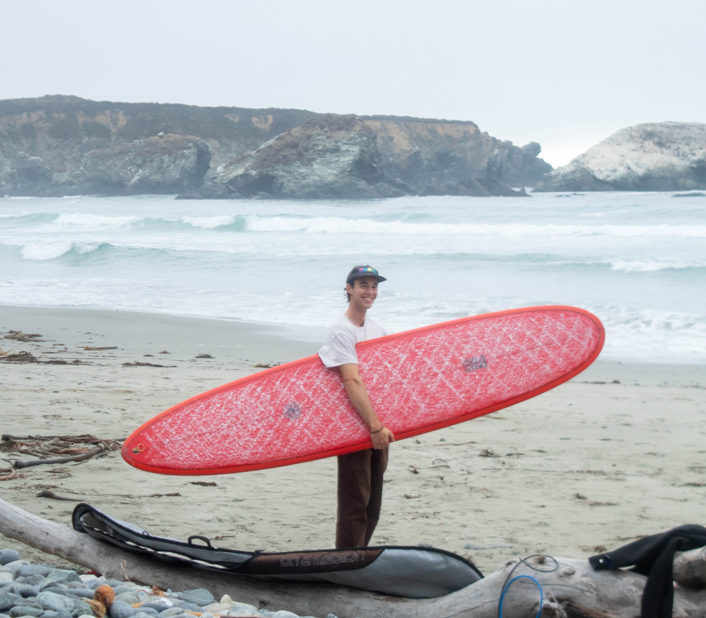

Hello, I'm Alex.
I am currently a Computer Engineer at Cal Poly and Captain of the Ultimate Frisbee Team. I have experience working with Python, Embedded C, and kids. I was a beach lifeguard in Santa Cruz for four years and a Junior Guard for nine before that. I am an avid explorer of earth and sea, and love the challenges that lie in facing the unknown.
CHARACTER LORE
I am curious. I like looking and listening and finding out how things work. I love imagining what it must have been like to be Capernicus understanding the relative masses of celestial bodies for the first time, or Kekule realizing that hydrocarbon chains could rap around. While it is very unlikely that I will discover the next field of scientific innovation, its not impossible. Just like how the Yucca Moth cant survive without the Yucca Plant and the Yucca Plant cant survive without the Yucca Moth, I believe there are incredible relationships waiting to be discovered all around us.

QUEST MOTIVATION
Having grown up by the ocean, I've seen firsthand how much the environment has changed, even in my short lifetime. Twice in the past three years, massive waves from record-breaking storms have torn apart our coastlines. Warming waters have made algal blooms more frequent, while invasive species encroach on already stressed ecosystems. I believe it is deeply unfortunate that we are cutting back funding from some of the most important research we can possibly be doing - finding ways to keep the Earth our home.
While we live away our lives inside little tin boxes with our harnessed magic (electricity), we have grown scared of the world around us. I care about helping people and helping people help themselves. Now that I've spent years in university learning the dark arts that underly the endlessly mysterious technologies of our today, I'm looking for ways to take back the world from the hands of massive corporations that would rather use this power to steal, silence, and sheppherd sheeplike consumers who are hardly aware of the dangers they face. I am interested in joining others like myself doing any sort of work anywhere I would be able to learn and grow.